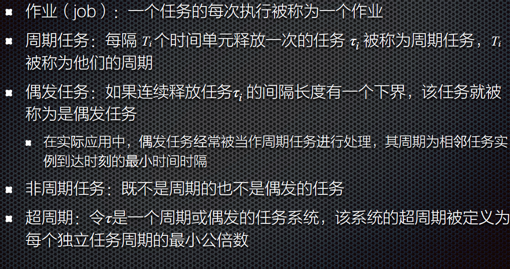

嵌入式软件系统
嵌入式系统
1. 嵌入式系统概论
- 嵌入式系统定义
- “嵌入式系统”实际上是”嵌入式计算机系统”的简称，以下是对嵌入式系统的不同定义。
- IEEE的定义
- 嵌入式系统是用于控制、监视或者辅助操作机器和设备的装置。
- 此定义是从应用上考虑的，嵌入式系统是软件和硬件的综合体，还可以涵盖机电等附属装置。
- 国内的定义
- 嵌入式系统是以应用为中心，以计算机技术为基础，软硬件可裁减，适用于应用系统对功能、可靠性、成本、体积、功耗有严格要求的专用计算机系统。
- 嵌入式设备是用于特定的设备
- 计算机技术为基础，必须要有计算
- 软硬件可裁剪:印证了专用设备的特点，将不需要的设备裁剪掉
- 嵌入式系统就是一个具有特定功能或用途的隐藏在某种设备中的计算机软硬件集合体，没有固定的特征形状。
- 嵌入的可以不是设备，而是生产流程，这样的系统也是嵌入式系统
- 嵌入式系统是以应用为中心，以计算机技术为基础，软硬件可裁减，适用于应用系统对功能、可靠性、成本、体积、功耗有严格要求的专用计算机系统。
- 其他的定义
- 看不见的计算机，一般不能被用户编程, 它有一些专用的I/O设备, 对用户的接口是应用专用的。
- 嵌入式系统是包含在某些较大的设备或产品中的计算机系统，其目的是为该设备提供监视和控制服务。
- 包括可编程计算机在内但本身不打算用作通用计算机的任何设备。
- 包含有计算机，但又不是通用计算机的计算机应用系统。
- 嵌入式系统示例
- CPS：信息物理系统，Cyber-Physical System (CPS) ，是计算进程与物理进程的集成
- WSN：无线感知网络，是由许多在空间中分布的自动装置组成的一种无线通信计算机网络。这些装置使用传感器器协作地监控不同位置的物理或环境状况
- 传感器:将非电信号转换为电信号，用来感知和度量外部世界，并将其转换为计算机可度量的电信号。比如温湿度、酸碱度传感器等。
- 物联网(IoT)是物理设备，车辆(也称为”连接设备”和”智能设备”)，建筑物以及其他嵌入电子设备，软件，传感器，执行器和网络的物品的互连网络 连接性，使这些对象能够收集和交换数据。

- 嵌入式系统的组成
- 嵌入式系统一般由嵌入式硬件和软件组成
- 硬件以微处理器为核心集成存储器和系统专用的输入/输出设备
- 软件包括：初始化代码及驱动、嵌入式操作系统和应用程序等，这些软件有机地结合在一起，形成系统特定的一体化软件。
- 嵌入式系统的特点
- 形式多样、面向特定应用：一般用于特定的任务，其硬件和软件都必须高效率地设计，可剪裁
- 高度制约的环境：嵌入式系统通常工作在资源高度受限的环境中，这也使得系统设计极具挑战性
- 与外部环境的交互，包含传感器和执行器：与外部环境的交互在很大程度上是无人干预的，需要传感器来接收来自外部环境的数据，通过执行器输出数据到外部环境并控制外部环境
- 实时性要求：一方面大多数实时系统都是嵌入式系统，另一方面嵌入式系统多数有实时性的要求，具有时间约束条件，必须在给定的时间范围内处理完事件
- 安全性和可靠性：某些实时嵌入式系统是安全至上且必须是具有高度的可靠性
- 关注成本：嵌入式系统通常需要注意的成本是系统成本，特别是量大的消费类数字化产品，其成本是产品竞争的关键因素之一
- 并发性：并发性是指在一个系统中将多个计算同时执行并潜在地交互的特性
- 嵌入式系统的分类
- 按嵌入式处理器的位数来分类：4位、8位、16位、32位、64位
- 按应用来分类
- 按速度分类：强实时系统、⼀般实时系统、弱实时系统
- 按确定性来分类：硬实时、软实时系统
- 按嵌入式系统软件复杂程度来分类
2. 嵌入式系统设计方法、EMP
- 设计过程
- 硬件组成：CPU、bus、memory、I/O devices: 网络，传感器，执行器等。
- 嵌入式微处理器(EMP)的分类
- 嵌入式微处理器种类繁多，按位数可分为4位、8位、16位、32位和64位。
- 根据功能不同，嵌入式微处理器分为四种：
- 嵌入式微处理单元(MPU)：嵌入式微处理器就是和通用计算机的处理器对应的CPU
- 嵌入式微控制器(MCU)：嵌入式微控制器就是将整个计算机系统的主要硬件集成到一块芯片中，芯片内部集成ROM/EPROM，RAM，总线，总线逻辑，定时/计数器，I/O，串行口等各种必要功能和外设
- 嵌入式DSP处理器：嵌入式DSP是专门用于信号处理方面的处理器，其在系统结构和指令算法方面进行了特殊设计，具有很高的编译效率和指令执行速度。
- 嵌入式SoC：系统级芯片，也称为片上系统（System-on-Chip），是追求产品系统最大包容的集成器件，绝大多数系统构件都在一个系统芯片内部
- 嵌入式微处理器特点
- 体积小、重量轻、可靠性高
- 功耗低
- 成本低：片上存储、引脚与封装、代码密度
- 工作温度、抗电磁干扰、可靠性等方面增强
- 选择微处理器的准则
- 高效、经济地满足任务的计算需求
- 软件开发工具的可用性
- 广泛的可用性和可靠的微控制器来源
- 设备分类
- 根据其能力和性能，物联网设备可以分为三类
- 高端设备，车载
- 中端物联网设备，包括Rasberry Pi等单板机（SBC）和智能手机
- 低端物联网设备，这些设备资源有限，无法运行这些传统的操作系统

3. 存储器架构
- 易失性存储器：随机存取存储器（RAM）
- SRAM：静态RAM，速度快，面积大
- DRAM：动态RAM，保持数据的时间很短，需要定期刷新，比SRAM更不稳定
- 大多数嵌入式系统都包括一个SRAM，许多ES也会包括DRAM
- 非易失性存储器
- 不需要持续供电来保留存储在计算设备中的数据或程序代码
- 只读存储器（ROM），或掩模ROM（Mask ROM）：内容在芯片工厂就已经固定
- 电可擦除可编程ROM（Electrically Erasable Programmable ROM，EEPROM）
- 快闪存储器（Flash）
- 有比较快的读取时间，但比SRAM和DRAM慢
- 写入时间大大超过读取时间，而且写入的次数是有限的
- NOR:(放置固态代码:因为还有XIP)
- 字可读取。
- 逐块擦除。
- NAND:
- 按页读取(512-4K字节)。
- 逐块擦除。
- NAND便宜，擦除速度更快，顺序访问时间更短
- 磁盘存储器
- 固件和可固化
- 固件（firmware）：一般存储于设备中的电可擦除只读存储器EEPROM 或FLASH芯片中，一般可由用户通过特定的刷新程序进行升级的程序
- 可固化（ROMable）：可被编程到ROM芯片中的机器语言
- 存储器层次结构
- 处理器寄存器
- 缓冲存储器：高速缓存Cache、地址转换高速缓存（TLB，也称快表）以及暂存存储器（SPM）。
- SPM和主存统一编址，每当某个简单的地址解码器给出一个SPM地址范围内的地址时，SPM就被访问
- SPM通常和处理器集成在一个芯片上
- 工作存储器（或主存储器、主存）：实现了处理器存储地址所涵盖的存储器。通常，其容量在MB到GB之间，并且是易失的
- flash、磁盘等非易失性存储，也可基于互联网的存储器解决方案
4. Bus
- 可编程I/O
- 在通信过程中选择控制寄存器或数据缓冲区的三种方法
- 独立I/O端口：I/0独立编址，不占用内存空间，但是只能用专门的I/0指令，访问端口的方法少
- 内存映射I/O：在内存映射I/O模式中，设备控制寄存器只是内存中的变量，可以像其他变量一样在C语言中寻址
- 混合解决方案，混合模型包括内存映射的I/O数据缓冲区和用于控制寄存器的独立I/O端口
- 在通信过程中选择控制寄存器或数据缓冲区的三种方法
- I/O中断部分：中断向量、中断优先级等内容与OS相同，不再赘述
- 可重入
- 定义：一个函数可以同时被多次调用。可重入函数在任何时候都可以被中断，一段时间后继续运行时数据不会丢失。
- 在嵌入式世界中，例程必须满足以下条件才能重入:
- 以原子方式使用所有共享变量，除非将每个共享变量分配给函数的特定实例
- 不调用不可重入的函数
- 不以非原子的方式使用硬件
- 竞态条件：设备或系统出现不恰当的执行时序，而得到不正确的结果
- CPU总线
- 总线（Bus）是计算机各种功能部件之间传送信息的公共通信干线
- 总线协议决定了设备是如何进行通信的
- 总线上的设备会经历状态序列：协议是由状态机指定的，协议中的每个参与者都有一个状态机。
- 分类
5. 嵌入式软件系统
嵌入式软件与桌面软件的对比
内存：有限，影响编程语言的选择以及开发工具的使用(比如编译器优化)
CPU处理能力：成本和功耗的考虑，ES不得不采用保守的设计方案，其中的CPU往往只是恰好满足要求。
操作系统：OS(Windows/Linux)、RTOS、专有OS或裸机
实时性
- 实时系统不⼀定会运行得很快，但⼀定是可预测的，通常的术语叫做确定性
- 实时性的要求对于OS的选择和程序设计都有影响
- 开发流程
- ES往往没有足够的资源进行软件开发。交叉开发对于工具的选择有很大影响。
- 开发过程也不同，编辑/编译/调试的循环是一样的，但执行程序这⼀步却非常复杂，需要把代码转移到目标机上或者在某种环境下运行。
- ES往往没有足够的资源进行软件开发。交叉开发对于工具的选择有很大影响。
- 执行流程：多数嵌入式设备从开机开始就会运行某个程序，该程序会⼀直运⾏到系统关机。这个程序可能存储在ROM，也可能是从⾮易失性存储器转移到RAM中执行。
- 嵌入式软件开发工具
- 软件组件
嵌入式软件系统层次结构
为何要为实时系统建立模型
- 辅助测试和完善最终系统
- 更重要的是，模型利用它所知的系统属性来描述整个系统，并能够被用于对系统特性的进⼀步研究
- 实时工程师使用程序模型来开发软件和硬件，以便能将整个实时系统全盘考虑
- 模型使得⼯程师能够预测程序的运行，从而满足系统的性能需求和功能需求
嵌入式软件架构
- 分为两部分：业务逻辑、实时依赖硬件的逻辑
嵌入式软件架构模式
- 非结构化单体架构：很容易构建，但很难维持规模和移植，与应用层的应用程序紧密耦合
- 分层架构
- 事件驱动架构
- 对于实时嵌入式应用程序和与能耗相关的应用程序非常有意义
- 通常利用中断来立即响应事件
- 事件驱动的体系结构通常使用消息队列、信号量和事件标志来表示系统中发生了事件
- 优点：具有相对的可扩展性、软件模块通常具有高内聚性和低耦合性
- 缺点：无论何时需要做任何事情，都有额外的开销和复杂性
- 微服务架构
- 微服务架构将应用程序构建为为业务领域开发的小型自治服务的集合
- 微服务本质上是低耦合的，使得微服务易于维护和可测试，开发人员可以快速扩展或移植微服务
- 围绕系统的业务逻辑组织，业务逻辑(有时称为业务功能)是系统行为的业务规则和用例
嵌入式软件设计模式
- 单核、多核、发布和订阅模型、RTOS模式、中断处理和低功耗设计
- 轮询
- 从外设收集数据的最直接的设计机制是让应用程序定期轮询外设，以查看是否有任何数据可供管理和处理
- watchdog：https://blog.csdn.net/shulianghan/article/details/80249185
- 有限状态机
- 与轮询类似，但只有当前状态被执行.
- 每个状态决定下一个状态(非顺序执行)。
- 优先级:每个状态确定下一个状态的优先级。
- 响应时间:所有任务的总和。
- 变更的影响:重大。更改任务的执行时间或添加任务会影响所有其他任务。
- 简单性:没有共享数据问题。
- 中断设计模式
- 中断应用程序的正常流程，以允许中断处理程序运行代码来处理系统中发生的事件
- 当设计ISR（中断处理服务）时，我们希望中断尽可能快地运行(以最小化中断)
- 优先级：中断优先于主循环
- 响应时间：所有任务的总和以及中断执行时间
- 更改的影响：对于中断服务程序而言意义不大。与轮询作为主循环相同。
- 共享数据：必须处理与中断服务程序共享的数据
- 是MCU中使用最多的
- 数据获取/存储相关的中断设计模式：线性数据存储、乒乓缓冲/双缓冲、环形/循环缓冲区、带有信号量的循环缓冲区、带有事件标志的循环缓冲区、消息队列
- DMA控制器将外设数据传输到循环缓冲区的设计模式
- DMA，全称Direct Memory Access，即直接存储器访问
- 无需CPU的交互情况下在RAM和外设之间以及内部传输数据
- RTOS应用程序设计模式
- 在RTOS应用程序中，通常有两种类型的同步
- 资源同步：决定了对共享资源的访问是否安全，包括中断锁定（关中断）、抢占锁定（禁用抢占式调度器）和互斥锁
- 活动同步：决定执行是否已达到特定状态，用于协调任务执行
- 例如，假设我们正在开发一个获取传感器数据并使用传感器值驱动电机的系统。我们很可能想要向运动任务发出信号，告诉它有新的数据可用，这样任务就不会对陈旧的数据采取行动
- 单向同步(任务对任务)：使用二值信号量或事件标志来同步任务
- 单向同步(中断到任务)：单向同步还可以在中断和任务之间同步和协调任务执行， 不同之处在于，在ISR给出信号量或事件标志之后，ISR将继续执行，直到完成为止。
- 双向同步：两个任务在它们之间的两个方向上进行协调
- 同步多个任务之广播设计模式：广播设计模式允许多个任务阻塞，直到给定信号量、出现事件标志，甚至将消息放入消息队列
- 发布和订阅模型：在许多情况下，物联网设备将启动电源，连接到云，然后订阅它想要接收的消息主题，该设备还可以发布特定的主题
6. 嵌入式操作系统概述
- 实时系统：一个实时系统是指计算的正确性不仅取决于程序的逻辑正确性，也取决于结果产生的时间，如果系统的时间约束条件得不到满足，将会发生系统出错
- 确定性（Determinism）：如果一个系统始终会为某个已知输入产生相同的输出，则该系统是确定性的
- 截止时限（Deadline）：截止时限就是必须完成某项任务的有限时间窗口，指明计算何时必须结束
- 实时操作系统（Real-Time Operating System, RTOS）是支持构建实时系统的操作系统
- RTOS与GPOS
- 相似的功能
- 多任务级别
- 软件和硬件资源管理
- 为应用提供基本的OS服务
- 从软件应用抽象硬件
- RTOS从GPOS分离出的功能
- 更快的特性
- 满足应用需要的剪裁能力
- 减少内存需求
- 为实时嵌入式系统提供可剪裁的调度策略
- 嵌入式应用上下文中具有更好的可靠性
- 支持无盘化嵌入式系统，允许从ROM或RAM上引导和运行
- 对不同硬件平台具有更好的可移植性
- 相似的功能
- 为何使用RTOS
- 可被复用的标准软件组件
- 灵活性
- 响应时间
- RTOS关键要求
- 操作系统的时间行为必须是可预测的
- 操作系统必须管理线程和进程的调度
- 一些系统要求操作系统管理时间
- 操作系统必须是快速的
- 可靠性
- 简洁紧凑
- RTOS内核系统服务
- 任务管理
- 同步与通信
- 内存管理
- 时间管理
- IO管理
- 异常与中断管理
- 物联网操作系统的要求
- 内存占用小
- 支持异构硬件
- 网络连接
- 节能
- 实时功能
- 安全
- 物联网操作系统分类
- 事件驱动的操作系统
- 该模型的关键思想是，系统上的所有处理都是由(外部)事件触发的，通常由中断发出信号
- 这类操作系统包括continki、TinyOS和OpenWSN
- 多线程OS
- 多线程操作系统通常会引入一些内存开销，这是由于堆栈预留空间造成的，而运行时开销则是由于上下文切换造成的
- 属于这一类的操作系统包括RIOT、nuttX、eCos或ChibiOS
- 纯RTOS
- 在工业/商业环境中，RTOS主要关注实现实时保证的目标，正式的验证、认证和标准化通常是至关重要的
- 为了允许模型检查和形式化验证，这些操作系统中使用的编程模型通常会对开发人员施加严格的约束
- 属于这一类别的物联网设备的操作系统包括FreeRTOS、eCos、RTEMS、ThreadX和一系列其他商业产品(通常是封闭源代码)
- 事件驱动的操作系统
- 调度程序分类
- 完全静态调度程序：在系统设计时制定三项决策（分配、排序、定时）
- 静态顺序调度程序/离线调度程序：在设计时完成任务的分配和排序，但直到任务运行时才确定每个任务的物理执行时间
- 在线调度程序
- 静态分配调度程序：在设计时制定任务的分配，其他决策在任务运行时制定
- 完全动态调度程序：在任务运行时制定所有的决策
- 任务的周期
- 
- 周期就是一个任务隔这么久会出现一次，同时也是这个任务完成的最晚时间
- 优先级
- 假设每个任务都有优先级号，调度程序总是执行优先级最高的任务
- 固定优先级：任务整个执行过程中其优先级保持不变
- 动态优先级：在执行过程中任务的优先级是可变的
- 非抢占式调度与抢占式调度程序
- 非抢占式优先级调度程序：通过优先级决定当前任务完成之后执行哪个任务，不中断一个正在执行的任务而去执行另外一个
- 抢占式优先级调度程序：在任何时刻，支持任务的到达，执行最高优先级的被激活任务。当任何任务改变优先级或激活状态时，内核可以调度一个新任务
- 可行调度：所有的任务执行都符合他们的时限
- RMS调度算法：单调速率调度
- EDD调度算法：最早交货期
- EDD在最大延迟最小化方面是最优的
- EDF调度算法：最早截止时限优先
- EDD不支持任务到达，可通过允许任务在任何时刻“到达”(就绪)来扩展EDD
- 最早截止时限优先(EDF)：给定n个具有任意到达时间的独立任务集，在任何时刻，在所有到达的任务中执行绝对截止时限最早的任务的算法对于最大延迟最小化上是最优的
- 看这篇：https://blog.csdn.net/Cap220590/article/details/102762190
- 优先序约束
- LDF调度算法：最晚时限优先
- LDF 在最大延迟最小化方面是最优的
- 但是，LDF要求所有任务都是已知的，并且在执行任何任务之前都知道它们的优先序约束
- 具有优先序的EDF
- 修改截止时限
- 从叶子往上面算，叶子的
di'就等于原来的di
- 从叶子往上面算，叶子的
- 修改截止时限
- 优先级反转
- 解决方案是优先级继承协议：当任务
Ji阻塞一个或多个高优先级任务时，它暂时假定(继承)被阻塞任务的最高优先级
- 解决方案是优先级继承协议：当任务
- 死锁问题的解决
- 优先级上限协议
- 每个锁或信号量都被分配了一个优先级上限，该上限等于可以锁定它的最高优先级任务的优先级
- 只有当任务T的优先级严格高于其他任务当前持有的所有锁的优先级上限时，任务T才能获得锁
- 优先级上限协议
- FreeRTOS 支持的调度方法：抢占式、协作式、时间片轮转

7. 实时内核
任务和ISR之间的通信方式
- 一个任务或ISR可以通过事件控制块ECB（信号量、邮箱或消息队列）向另外的任务发信号
- 一个任务还可以等待另一个任务或中断服务子程序给它发送信号，对于处于等待状态的任务，还可以给它指定一个最长等待时间
- 多个任务可以同时等待同一个事件的发生，当该事件发生后，在所有等待该事件的任务中，优先级最高的任务得到了该事件并进入就绪状态，准备执行
μC/OS：一种基于优先级的抢占式多任务实时操作系统，包含了实时内核、任务管理、时间管理、任务间通信同步（信号量，邮箱，消息队列）和内存管理等功能。
- 邮箱（MailBox）：一个任务或ISR可以通过邮箱向另一个任务发送一个指针型的变量，该指针指向一个包含了特定“消息”（message）的数据结构；
- 消息队列可以使一个任务或ISR向另一个任务发送多个以指针方式定义的变量，实现了任务接收来自其他任务或中断的不固定长度的消息。当队列中的消息是空时， 读取消息的任务将被阻塞
- μC/OSII中是实模式存储管理，不划分内核空间和用户空间，整个系统只有一个地址空间，即物理内存空间，应用程序和内核程序都能直接对所有的内存单元进行访问
- μC/OS采用的是固定分区的存储管理方法，把连续的大块内存按分区来管理，每个分区包含有整数个大小相同的块
内存管理方法
静态内存分配（Static Memory Allocation）
- 允许用户在编译时为任务和内核对象（如队列、信号量等）分配静态内存
- 静态可以保证设备的可靠性但是需要考虑内存上限，内存使用效率低
动态内存分配（Dynamic Memory Allocation）
- 提供用于动态内存分配的内置函数，允许任务在运行时请求和释放内存
- 这种方法对于需要灵活管理内存的应用非常有用，但需要小心避免内存泄漏和碎片化
内存池（Memory Pools）
- 内存池是在系统初始化时创建的一块内存区域，用于存储固定大小的内存块
- 任务可以从内存池中申请内存块，并在使用完毕后将其返回给内存池，这有助于减少内存碎片化
8. 板级支持包与系统引导
- 版级支持包 BSP
- BSP全称“板级支持包”（Board Support Packages），是介于主板硬件和操作系统中驱动层程序之间的一层，一般认为它属于操作系统一部分，主要是实现对操作系统的支持，为上层的驱动程序提供访问硬件设备寄存器的函数包，使之能够更好的运行于硬件主板
- BSP是用于特定硬件平台的一组软件组件，通常包括启动代码、驱动程序和其他与硬件相关的软件库
- 组成
- 启动代码：负责系统上电后的硬件初始化，如设置时钟、初始化存储器等
- 硬件抽象层（HAL）：介于底层硬件和上层软件之间的一层抽象层，用于隐藏硬件的具体实现细节，提供统一的接口
- 设备驱动：针对特定硬件的驱动程序
- RTOS的引导模式
- 不需要BootLoader的引导模式：时间效率高，系统快速启动，直接在NOR flash或ROM系列非易失性存储介质中运行，但不满足运行速度的要求
- 需要BootLoader的引导模式：节省空间，牺牲时间，适用于硬件成本低，运行速度快，但启动速度相对慢
- BootLoader：嵌入式系统中的 OS 启动加载程序
- 汇编部分执行简单的硬件初始化
- C语言部分负责复制数据,设置启动参数,串口通信等功能
9. 嵌入式系统建模
- 建模、设计、分析
- 建模是通过模拟加深对系统理解的过程
- 模型是对所研究的系统、过程或概念的一种表达形式
- 使用模型的目的是要给出系统的抽象视图，每个模型都表示一组对象以及这些对象之间的相互关系

- 常见的建模技术
- 面向状态的建模
- 面向活动的建模
- 面向结构的模型
- 面向数据的模型
- 异构模型：综合前四种模型特征
- 建模是通过模拟加深对系统理解的过程
- 嵌入式系统模型的用途
- 通过使用现代建模软件工具，可以离线仿真的方式进行设计和执行初始验证
- 可以使用模型来作为所有后续开发阶段的基础
- 建模（涉及硬件原型设计）将降低出错风险，通过在整个开发过程中执行验证和确认测试来缩短开发周期
- 以系统模型为基础，可以更快、更可靠地进行设计评估和预测
- 这种迭代方法可以在性能和可靠性方面改进设计
- 由于模型的可重用性以及对物理原型的依赖的减少，降低了资源成本
- 通过使用代码自动生成技术，可以减少开发错误和开销
- 建模语言
- 与编程语言一样，建模语言有明确的定义和标准语法，用于表示结构和功能参与者及其随时间变化的主要关系
- 建模语言有多种形式
- 图形、文本
- 面向文档、仿真或执行
- 专注于体系架构层面内容、实现层面内容
- 何时为嵌入式系统建立模型
- 任务和安全关键型应用
- 高度复杂的应用程序和系统
- 大型开发团队
- 没有其他选择（当没有原型时）
10. 有限状态机FSM
- 反应式(reactive)系统：指能够持续地与环境进行交互，并且及时地进行响应
- 有限状态机：又称有限状态自动机，简称状态机，是表示有限个状态以及在这些状态之间的转移和动作等行为的数学计算模型
- 两个重要特性
- 确定性：如果对于每个状态，每个输入值最多可激活一个转移，则称这样的状态机具有确定性，这意味着Φ(S,E)是单一值
- 可接受性：如果对于每个状态，每个输入都有至少一个可能的转移，则称这样的状态机为可接受的，定义了每个可能的状态和输入值
- Moore状态模型：意味着输出完全由当前状态决定，与输入信号的当前值无关
- Mealy状态模型：意味着输出既依赖于当前状态，也与输入信号的当前值有关
- 两个重要特性
- 状态表FSM
- 层次有限状态机
- 是由多个嵌套到层次结构中的有限状态机（fsm）组成的
- 行为树BTs
- 行为树是一种分层的决策树，通常用于实现复杂的行为逻辑
- 将各种行为组织成节点，并通过条件来控制节点的执行顺序


11. 嵌入式系统设计方法
- 嵌入式系统设计所面临的挑战
- 需要多少硬件？
- 如何满足时限要求，如何处理多项功能在时间上的协调一致关系？
- 如何降低系统的功耗？
- 如何设计以保证系统可升级？
- 如何保证系统可靠地工作？
- 设计目标：成本、性能、功耗、尺寸、可伸缩性和可重用性、容错
- 传统的嵌入式系统的设计过程的基本流程
- 软硬件的划分
- 嵌入式系统的设计涉及硬件与软件部件，设计中必须决定什么功能由硬件实现，什么功能由软件实现
- 硬件和软件具有双重性
- 软硬件变动对系统的决策造成影响
- 划分和选择需要考虑多种因素
- 硬件和软件的双重性是划分决策的前提
12. 物联网
- 定义
- 物联网，Internet of Things (IoT) ，通过射频识别(RFID)、红外感应器、全球定位系统、激光扫描器等信息传感设备，按约定的协议，把任何物品与互联网相连接，进行信息交换和通信，以实现智能化识别、定位、跟踪、监控和管理的一种网络概念
- 物联网是一种计算设备、机械、数字机器相互关系的系统，具备通用唯一识别码（UID），并具有通过网络传输数据的能力，无需人与人、或是人与设备的交互
- 设备：在物联网中，具有强制性通信能力和选择性传感、激励、数据捕获、数据存储和数据处理能力的设备
- 物：在物联网中，“物”指物理世界（物理装置）或信息世界（虚拟事物）中的对象，可以被标识并整合入通信网
- IOT特征
- 智能：从生成的数据中提取知识
- 架构：一个支持许多其他架构的混合架构
- 复杂的系统：一组动态变化的对象
- 规模：可伸缩性
- 时间：数十亿并行和同时发生的事件
- 空间：定位
- 一切都是服务：将资源作为服务消费
- IoT的优势
- 技术优化：物联网技术有助于技术的改进和提高
- 改进的数据采集：传统的数据采集有其局限性，设计为被动使用，物联网促进了对数据的即时行动
- 减少浪费：物联网提供实时信息可使资源被有效的管理
- 提高客户参与度：物联网允许你通过发现问题和改进流程来改善客户体验
- IoT的不足
- 安全：物联网技术创造了一个连接设备的生态系统，尽管有足够的安全措施，但系统可能缺乏足够的认证控制
- 隐私：物联网的使用，在没有用户积极参与的情况下，暴露大量的个人数据，这就产生了很多隐私问题
- 灵活性：主要涉及到与另一个系统的集成，在这个过程中涉及到许多不同的系统
- 复杂性：物联网系统的设计也相当复杂，此外部署和维护也不是很容易
- 合规性：物联网有自己的一套规则和法规，然而，由于法规遵循的复杂性，其任务是相当具有挑战性的
- IoT应用
- 智能家居类：智能灌溉、智能车库门、智能门锁、智能灯、智能恒温器和智能安全系统
- 可穿戴设备类：健康和运动跟踪器、智能服装/可穿戴设备
- 宠物类：宠物定位系统、智能狗狗门
- 物联网体系结构
- 物联网软件、硬件、连接
- 物联网软件：若干物联网技术已接近成熟，包括边缘人工智能、基于物联网的流分析、监督和非监督机器学习
- 物联网硬件：现有物联网技术被归类为相当成熟或主流包括cpu、mcu、gpu、安全芯片、FPGA和边缘网关
- 物联网连接：eSIM、mesh网络、5G和Wi-Fi 6，接近成熟
13. IOT平台
- 概念
- 物联网平台是一种多层技术，能够在物联网领域中直接提供、管理和自动化连接设备
- 对于开发者来说，物联网平台提供了一套随时可用的功能，极大地加快了联网设备应用程序的开发，同时兼顾了可扩展性和跨设备兼容性
- 物联网平台起源于物联网中间件的形式，其目的是充当硬件层和应用层之间的中介，主要任务包括通过不同的协议和网络拓扑从设备收集数据、远程设备配置和控制、设备管理和空中固件更新
- 物联网平台覆盖功能领域
- 使设备连接管理简单
- 接收、存储和发送数据
- 帮助企业可视化设备数据并提供关键的见解
- 提供特定于应用程序的支持和数据
- 是否有知识渊博、反应灵敏的支持团队 提供健壮的安全
- 提供支持物联网解决方案特定需求的定制
- 一致的产品交付和平台更新
- 设备管理
- 设备管理服务, 可以帮助对所有连接的设备, 在全球范围内进行规模化的注册、查看及远程管理
- 物模型（Thing Model）是对设备在云端的功能描述，包括设备的属性、数据、服务和事件
- 物联网平台提供设备影子功能，用于缓存设备状态，是一个 JSON 文档
- 数字孪生，是充分利用物理模型、传感器更新、运行历史等数据，集成多学科、多物理量、多尺度、多概率的仿真过程，在虚拟空间中完成映射，从而反映相对应的实体装备的全生命周期过程
- 通信协议
- 应用层协议
- 多协议接入方案
- 通过协议转换网关实现泛协议设备接入
- 应用层协议
实验部分
- Arduino为什么流行
- 跨平台的
- 简单，清晰的编程环境
- 开放源码和可扩展软件
- 开源和可扩展硬件
- 便宜
- ROS
- ROS 是一个适用于机器人的开源的元操作系统，提供了操作系统应有的服务，包括硬件抽象、底层设备控制、常用函数的实现、进程间消息传递、以及包管理
- ROS的核心是提供一个消息传递系统，通常称为“中间件”或“管道”
- 为什么使用
- ROS生态系统具有丰富的机器人软件
- ROS项目的目标是不断降低构建机器人应用程序的门槛
- ROS社区是一个庞大、多样和全球性的社区
- PID
- 反馈控制是指将系统的输出信息返送到输入端，与输入信息进行比较，并利用二者的偏差进行控制的过程
- 开环控制：open loop control，又称“开环控制系统”，是指在一个控制系统中系统的输入信号不受输出信号影响的控制系统, 也就是，不将控制的结果反馈回来影响当前控制的系统
- 闭环控制：是指作为被控的输出量以一定方式返回到作为控制的输入端，并对输入端施加控制影响的一种控制关系，即带有反馈信息的系统控制方式
- PID：在过程控制中，按偏差的比例（P）、积分（I）和微分（D）进行控制的PID控制器（亦称PID调节器）是应用最为广泛的一种自动控制器
- 传感器
- 温度漂移（温漂）：传感器在不同温度条件下，输出信号发生的变化。由于传感器的材料、结构以及电子元件的温度依赖性，随着环境温度的变化，传感器的灵敏度、零点和其他性能可能发生变化。
- 零点漂移（零漂）：传感器在没有输入信号（例如，温度、压力、加速度等）时，输出信号发生的变化。理想情况下，当输入信号为零时，传感器应该输出零值，但实际情况中，传感器可能会在无输入的情况下产生一个非零的输出，称为零点漂移。
嵌入式软件系统
https://frosty-xue.github.io/2025/01/10/嵌入式软件系统/